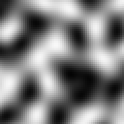

How Noise Distributes Things¶
Noise is used to determine something based on the value when its position is passed into a noise sampler. For example setting a particular block based on the value of a sample at the blocks position.
Thresholds¶
The simplest way of distributing based on noise is to apply a threshold, which involves determining something as one of of two states based on whether the sample at its position is higher or lower than a number. This number is called the ‘threshold’.
Planting Grass¶
Let’s say we want to generate some tall grass on each grass block. Planting tall grass on every grass block might not be desirable so we need some way of determining randomly which grass blocks should have tall grass. Applying a threshold on a 2D white noise sampler is the perfect use case for this scenario.
For each grass block, we’ll feed its position and the world seed into a 2D white noise sampler. This will provide us a sample (from -1 to 1 as discussed) for each block. We will then apply a threshold
on the sample to determine whether we place some grass or not; if the sample is below some defined grass placement threshold (we will use 0), then tall grass
should be placed on that block.
Grass Placement Model
Results

As you can see, we now have a method of randomly determining if tall grass should be placed or not for any given grass block.

Modifying the threshold controls how much / little grass will generate:
Threshold = -0.25

Lowering the threshold from 0 to -0.25 results in less grass because we are effectively removing the values between
-0.25 and 0 from falling below the threshold. Conversely, increasing the threshold will result in more grass, as
more values will fall below the threshold.
Distributing Lists¶
Noise can be segmented into lists of things. For example we might want to distribute the following list across some simplex noise to get the following result:
colors:
- Blue
- Green
- Yellow
- Red
Raw Noise Values
Segmented Noise

The colors are just for demonstration, however they could represent anything, such as biomes, block palettes, etc.
This process is done is by applying multiple thresholds to split the range of noise values:

From this we can intuitively see that samples less than -0.5 will correspond to Blue, samples in range [-0.5, 0] to Green and so on.
Weighted Lists¶
Repeating a list item will result in it taking up a larger range of values, for example this would make Blue take up twice the area compared to the other colors:
colors:
- Blue
- Blue
- Green
- Yellow
- Red
Rather than repeating each item to increase its ‘weight’ in the list, we can define the number of times the item should be repeated with a number like so:
colors:
- Blue: 2
- Green: 1
- Yellow: 1
- Red: 1
This is what we call a weighted list. Weighted lists are commonly used in conjunction with noise samplers to distribute things.
The numbers can be thought of as the ratios each item will take up across a noise sampler’s output. Using the example above, there would be a Blue:Green:Yellow:Red ratio of 2:1:1:1
Terra will automatically determine the thresholds and segment the noise behind the scenes, making weighted lists easy to configure.